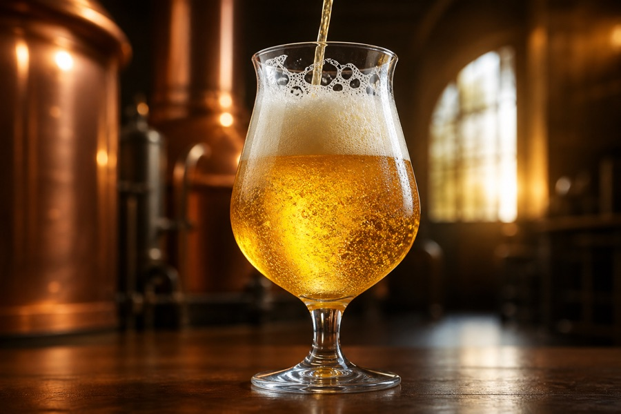

За вкусот, процесот и сè што го прави едно пиво вредно за разговор.

01 / 18 јуни 2026 г.
Зошто Калуѓер завршува суво
Трипелот е силен, но не треба да биде тежок. Канди шеќерот помага да се добие сув, елегантен крај.
Прочитај ја приказната +
Калуѓер користи пилснер слад и белгиски канди шеќер. Шеќерот ја зголемува јачината без да го отежне телото. Белгискиот квасец носи овошје и зачин, додека Styrian Goldings и Saaz го балансираат завршетокот со 30 IBU.
Банана и каранфилче не се сируп. Тие се ферментациски естри и феноли од пченичен квасец.
Прочитај ја приказната +
Магла почнува со висок удел пченичен слад. Топлата ферментација со вајцен квасец ги создава препознатливите ароми на банана и каранфилче. Само 12 IBU од Tettnang му оставаат простор на квасецот да ја раскаже приказната.
Редоследот од Зрно до Корен не е случаен: секое шише открива друг дел од колекцијата.
Прочитај ја приказната +
Почни со свежото Зрно, па продолжи со меката Магла. Калуѓер носи златен, сув и зачински карактер, Опат додава темно овошје и карамел, а Корен завршува со печен слад. Ова не е скала на горчина: секое шише отвора различен дел од колекцијата.